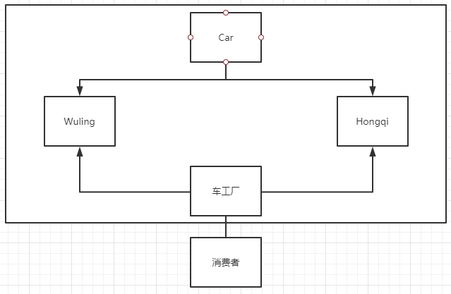
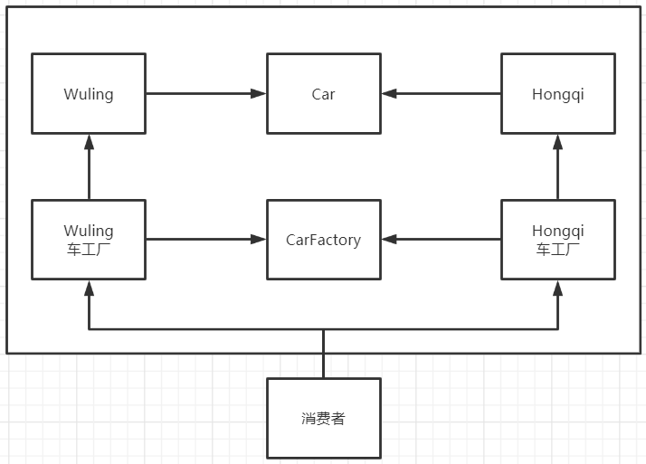

说明
作用
实现了创建者和调用者的分离
详细分类
简单工厂模式：用来生产同一等级结构中的任意产品(对于增加新的产品，需要修改已有代码)
虽然某种程度上不符合设计原则，但实际使用最多
工厂方法模式：用来生产同一等级结构中的固定产品(支持增加任意产品)
不修改已有类的前提下，通过增加新的工厂实现拓展
抽象工厂模式：围绕一个超级工厂创建其他工厂。该超级工厂又称为其他工厂的工厂。
不增加产品，可以增加产品族
主要依据的OOP原则
开闭原则：对扩展开放，对修改关闭。
依赖倒置原则：要面向接口编程，不要面向实现编程。
迪米特法则：只与你的直接朋友交谈，不跟“陌生人”说话。
核心本质
实例化对象不使用new，用工厂方法代替。
将选择实现类，创建对象统一管理和控制，从而将调用者跟实现类解耦。
实现
存在五菱与红旗两种车
若消费者想要买车，最原始的方法就是消费者自己造车，及new 对象
若造车需要非常多的参数时，消费者就需要自己填这非常多的参数
简单工厂模式（静态工厂模式）
现在添加一个车工厂的中间类，
消费者只需要与车工厂进行对接，
不用管车工厂是怎样造车的
这样大大方便了消费者

各种类代码
1
2
3
4
5
6
7
8
9
10
11
12
13
14
15
16
17
18
19
20
|
interface Car {
void name();
}
class Wuling implements Car {
@Override
public void name() {
System.out.println("五菱宏光");
}
}
class Hongqi implements Car{
@Override
public void name() {
System.out.println("红旗");
}
}
|
工厂代码
1
2
3
4
5
6
7
8
9
10
11
12
13
14
15
|
public class CarFactory {
public static Car getCar (String name) {
if ("五菱".equals(name)) {
return new Wuling();
}
if ("红旗".equals(name)) {
return new Hongqi();
}
return null;
}
}
|
客户获取
1
2
3
4
5
6
7
|
class Consumer {
public static void main(String[] args) {
CarFactory.getCar("五菱").name();
CarFactory.getCar("红旗").name();
}
}
|
工厂方法模式
若需要横向拓展车种类时，那么若使用简单工厂模式时肯定是要修改工厂类的代码的

| 复杂度 |
占优势的工厂模式 |
| 结构复杂度 |
simple（简单工厂模式） |
| 代码复杂度 |
simple（简单工厂模式） |
| 编辑复杂度 |
simple（简单工厂模式） |
| 管理复杂度 |
simple（简单工厂模式） |
| 根据设计原则 |
工厂方法模式 |
| 根据实际业务 |
简单工厂模式 |
1
2
3
4
5
6
7
8
9
10
11
12
13
14
15
16
17
18
19
20
21
22
23
24
25
26
27
28
29
30
31
32
33
34
35
36
37
38
39
40
41
42
43
44
45
46
47
48
49
50
51
52
53
54
55
56
57
58
|
interface Car {
void name();
}
interface CarFactory {
Car getCar();
}
class Wuling implements Car {
@Override
public void name() {
System.out.println("五菱宏光");
}
}
class WlingFactory implements CarFactory {
@Override
public Car getCar() {
return new Wuling();
}
}
class Hongqi implements Car{
@Override
public void name() {
System.out.println("红旗");
}
}
class HongqiFactory implements CarFactory {
@Override
public Car getCar() {
return new Hongqi();
}
}
class Consumer {
public static void main(String[] args) {
Car car = new WlingFactory().getCar();
Car car2 = new HongqiFactory().getCar();
car.name();
car2.name();
}
}
|